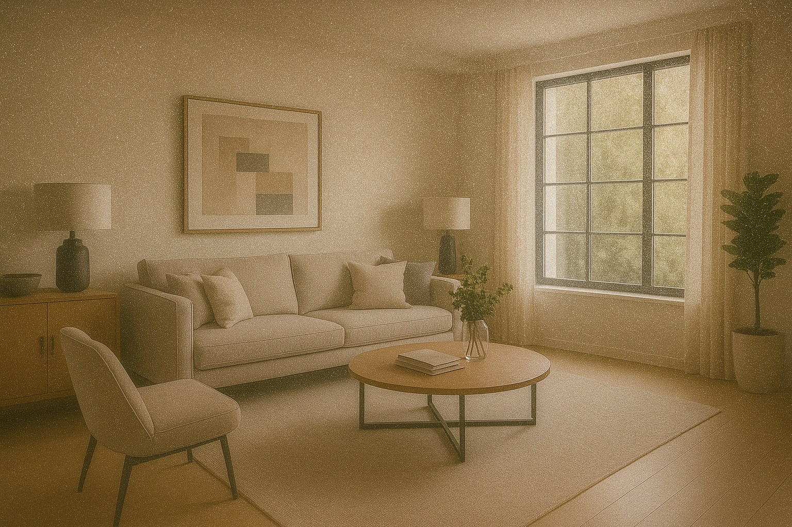

LÖSUNGEN FÜR TIERHAUSHALTE
Haustiere sind Familienmitglieder – doch sie bringen auch Haare, Staub und Schmutz ins Zuhause. Mit den richtigen Reinigungssystemen bleibt Ihr Heim hygienisch sauber, frei von Tierallergenen und angenehm frisch – ganz ohne Chemie.
Sauber wohnen. Tierfreundlich reinigen. Entspannt genießen.
Haustiere bereichern das Leben – doch sie bringen auch jede Menge Haare, Schmutz und Gerüche mit.
Auf Böden, Sofas, Teppichen und Kleidung – kaum entfernt, schon sind neue da.
Pfotenabdrücke, Erde und Staub gelangen täglich ins Haus.
Viele Hunde und Katzen reagieren selbst empfindlich auf Milben – Hauptprobleme sind Juckreiz und die Folge.
Das Ergebnis: Viel Putzaufwand, schnell unordentliche Räume – und oft Beschwerden bei Mensch und Tier.


Ein sauberes Zuhause ist auch für Tierhalter möglich – wenn Reinigungslösungen speziell auf die besonderen Herausforderungen von Fell, Schmutz und Gerüchen abgestimmt sind.
Statt sie ständig neu aufzuwirbeln, müssen sie direkt gebunden und entsorgt werden.
Ohne Chemie, die Tiere belasten könnte – aber wirksam gegen Bakterien und Schimmel.
Damit Mensch und Tier weniger Beschwerden haben.
So bleibt Ihr Heim hygienisch frisch, Ihre Tiere fühlen sich wohl – und Sie genießen ein sauberes Zuhause ohne ständigen Mehraufwand.
Tierhaare, Hautschuppen und Staub werden nicht im Beutel gesammelt, sondern direkt im Wasser gebunden – ohne dass sie wieder in die Luft gelangen.
werden effizient eingesaugt – auch aus Teppichen und Polstern.
Staub und Allergene bleiben im Wasser, nicht in der Luft.
Frischere Luft ohne Tiergeruch und Feinstaub.
und Tiere mit Milbenempfindlichkeit.
Haare und Staub bleiben im Wasser gebunden.
Das Ergebnis: Weniger Haare, weniger Staub, weniger Beschwerden – für ein rundum sauberes Zuhause.
Heiße Trockendampfreinigung entfernt festsitzenden Schmutz und Gerüche – hygienisch und schonend, ganz ohne Reinigungsmittel.
Besonders effektiv bei: Eingetrockneten Pfotenabdrücken und Schmutzspuren auf fast allen Oberflächen, Textilien wie Sofas, Körbchen oder Vorhängen – zügig, gründlich und materialschonend reinigen, Gerüchen von Tierhaaren, Urin oder Feuchtigkeit – heißer Wasserdampf reduziert diese Belastungen, Milbenbefall in Decken und Kissen – durch die Hitze werden Allergene aller Art effektiv bekämpft
Das Ergebnis: Spürbar hygienische Sauberkeit, neutrale Frische – und ein tierfreundlicher Haushalt ohne Chemie.
Mehr über Dampfreiniger
Tierhaare, Hautschuppen und Staub werden nicht im Beutel gesammelt, sondern direkt im Wasser gebunden – ohne dass sie wieder in die Luft gelangen.
Ihre Vorteile: Haare von Hund und Katze werden effizient eingesaugt – auch aus Teppichen und Polstern, Weniger Wiederverstaubung: Staub und Allergene bleiben im Wasser, nicht in der Luft, Bessere Raumluft: Frischere Luft ohne Tiergeruch und Feinstaub, Ideal für Tierallergiker und Tiere mit Milbenempfindlichkeit.
Das Ergebnis: Weniger Haare, weniger Staub, weniger Beschwerden – für ein rundum sauberes Zuhause.
Mehr über Wasserstaubsauger
Sehen Sie den Unterschied: weniger Tierhaare, weniger Gerüche, spürbar sauberer. Bewegen Sie die Regler und vergleichen Sie die Bilder aus echten Tierhaushalten.


Weniger Reinigungsaufwand trotz Tierhaaren und Schmutz – viele Tierhalter berichten von spürbar weniger Aufwand und einem dauerhaft frischeren Zuhause.
"Seit wir den Wasserstaubsauger haben, sind die Tierhaare kein Problem mehr. Die Luft ist spürbar sauberer und ich muss viel seltener saugen."
"Der Dampfreiniger hat die Tiergerüche komplett neutralisiert. Endlich kann ich Sofas und Körbchen hygienisch reinigen – ganz ohne Chemie."
"Als Familie mit zwei Hunden ist das System ein Game-Changer. Weniger Putzaufwand, sauberere Luft und weniger Gerüche – perfekt für uns."
Haustiere bringen Freude, aber auch viel zusätzliche Arbeit ins Haus. Mit den richtigen Geräten lassen sich Haare, Schmutz und Gerüche deutlich leichter in den Griff bekommen – bei gleichzeitig hygienischer Sauberkeit und ganz ohne Chemie.
Multifunktionale Geräte statt Gerätechaos: Zwei hochwertige Systeme lösen fast alle typischen Probleme im Tierhaushalt.
Weniger Schrubben, mehr Wirkung: Dampf und Wasser übernehmen den Großteil – ideal bei großen Flächen oder hartnäckigen Flecken.
Einfache Reinigung verschiedenster Oberflächen: Böden, Sofas, Körbchen, Teppiche, Vorhänge – oft ohne Aufsatzwechsel.
Nachhaltige Sauberkeit: Weniger Geruch und Wiederverstaubung: Wasserbindung verhindert, dass Staub und Geruch zurück in die Luft gelangen.
Chemiefrei & Tierfreundlich: Sicher für Tiere, schonend für empfindliche Pfoten – gut für alle Bewohner.
Ob für Ihre Familie oder Ihr Unternehmen – gemeinsam schaffen wir ein Umfeld, das Gesundheit möglich macht.
Bei Dr. Sauber … steht das Wohlbefinden unserer Kunden und deren Familien an oberster Stelle. Wir sind leidenschaftlich daran interessiert, Ihnen Lösungen von höchster Qualität zu bieten.
Bewährte Experten: Lösungen entwickelt von erfahrenen Reinigungsexperten mit über 40 Jahren Branchenerfahrung.
Sichere Umgebung: Hochwertige Behandlungen in einer sicheren, chemiefreien Umgebung für Ihre Familie.
Maßgeschneiderte Lösungen: Individuelle Reinigungspläne, die darauf ausgelegt sind, Ihr Wohlbefinden zu optimieren.
Ja, der Wasserstaubsauger bindet Tierhaare direkt im Wasser und verhindert, dass sie wieder aufgewirbelt werden. Haare von Hund und Katze werden effizient eingesaugt – auch aus Teppichen und Polstern.
Der Dampfreiniger entfernt eingetrocknete Pfotenabdrücke und Schmutzspuren auf fast allen Oberflächen. Heißer Dampf löst auch hartnäckige Verschmutzungen – ganz ohne Chemie.
Ja, der Dampfreiniger neutralisiert Gerüche von Tierhaaren, Urin oder Feuchtigkeit. Heißer Wasserdampf reduziert diese Belastungen und schafft eine neutrale Frische.
Durch die Hitze des Dampfreinigers werden Allergene aller Art effektiv bekämpft. Das reduziert die Belastung für Tiere mit Milbenempfindlichkeit spürbar.
Ja, Textilien wie Sofas, Körbchen oder Vorhänge können zügig, gründlich und materialschonend mit dem Dampfreiniger gereinigt werden.
Viele Tierhalter berichten von spürbar weniger Aufwand. Durch die effiziente Reinigung und weniger Wiederverstaubung sinkt der Reinigungsaufwand deutlich.
Ja, die Geräte sind chemiefrei und tierfreundlich. Sie sind sicher für Tiere und schonend für empfindliche Pfoten – gut für alle Bewohner.
Die Wasserfiltration reduziert Allergene spürbar. Weniger Tierhaare und Allergene in der Luft bedeuten weniger Beschwerden für allergische Personen.
Nein, die Geräte sind einfach zu reinigen. Das Wasser wird einfach ausgeleert und die Geräte sind wieder einsatzbereit.
Ja, die Geräte sind für verschiedene Wohnsituationen geeignet. Wir beraten Sie gerne über die passende Lösung für Ihre Räumlichkeiten.
Nein, die Dr. Sauber Systeme ersetzen herkömmliche Staubsauger und spezielle Filter. Zwei hochwertige Systeme lösen fast alle typischen Probleme im Tierhaushalt.
Ja, Sie können die Geräte unverbindlich in Ihrem Zuhause ausprobieren. So erleben Sie den Unterschied direkt in Ihrer Wohnsituation.